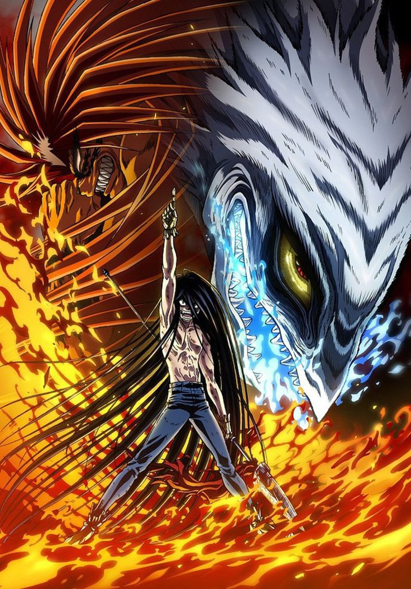
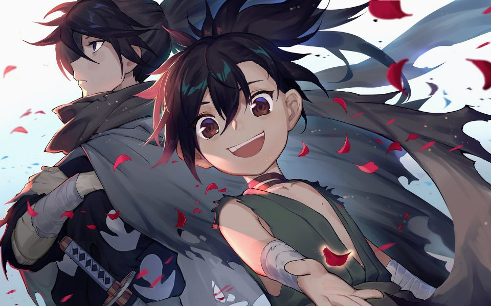
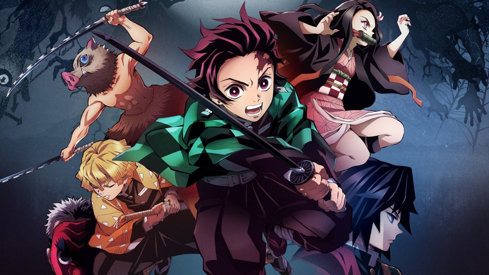

5: Ushio to Tora
Ratings : 🌟 7.6
English Name : Ushio and Tora
Genre : ActionAdventureComedyDemonsShounenSupernatural
Seasons : 2
Episodes : 39
Air-Date : 3-July-2015
Watch-Time : 24 min.(Per Ep.)
Synopsis:
Ushio Aotsuki is a stubborn middle school student and son of an eccentric temple priest who goes about life without care for his father's claims regarding otherworldly monsters known as youkai. However, as he is tending to the temple while his father is away on work, his chores lead him to a shocking discovery: in the basement he finds a menacing youkai impaled by the fabled Beast Spear.
The beast in question is Tora, infamous for his destructive power, who tries to coerce Ushio into releasing him from his five hundred year seal. Ushio puts no trust in his words and refuses to set him free. But when a sudden youkai outbreak puts his friends and home in danger, he is left with no choice but to rely on Tora, his only insurance being the ancient spear if he gets out of hand.
Ushio and Tora's meeting is only the beginning of the unlikely duo's journey into the depths of the spiritual realm. With the legendary Beast Spear in his hands, Ushio will find out just how real and threatening the world of the supernatural can be.
4: Dororo
Ratings : 🌟 8.2
English Name : Dororo
Genre :ActionAdventureDemonsHistoricalSamuraiSupernaturalShounen
Seasons : 1
Episodes : 24
Air-Date : 7-January-2019
Watch-Time : 24 min.(Per Ep.)
Synopsis:
The greedy samurai lord Daigo Kagemitsu's land is dying, and he would do anything for power, even renounce Buddha and make a pact with demons. His prayers are answered by 12 demons who grant him the power he desires by aiding his prefecture's growth, but at a price. When Kagemitsu's first son is born, the boy has no limbs, no nose, no eyes, no ears, nor even skin—yet still, he lives.
This child is disposed of in a river and forgotten. But as luck would have it, he is saved by a medicine man who provides him with prosthetics and weapons, allowing for him to survive and fend for himself. The boy lives and grows, and although he cannot see, hear, or feel anything, he must defeat the demons that took him as sacrifice. With the death of each one, he regains a part of himself that is rightfully his. For many years he wanders alone, until one day an orphan boy, Dororo, befriends him. The unlikely pair of castaways now fight for their survival and humanity in an unforgiving, demon-infested world.
3: Hellsing Ultimate

Ratings : 🌟 8.4
English Name : Hellsing Ultimate
Genre : ActionMilitaryHorrorDemonsSeinenSupernaturalVampire
Seasons : 1
Episodes : 10
Air-Date : 10-February-2006
Watch-Time : 50 min.(Per Ep.)
Synopsis:
There exist creatures of darkness and evil that plague the night, devouring any human unfortunate enough to be caught in their grasp. On the other side is Hellsing, an organization dedicated to destroying these supernatural forces that threaten the very existence of humanity. At its head is Integra Fairbrook Wingates Hellsing, who commands a powerful military and spends her life fighting the undead.
Integra's vast army, however, pales in comparison with her ultimate weapon: the vampire Alucard, who works against his own kind as an exterminator for Hellsing. With his new vampire servant, Seras Victoria, at his side, Alucard must battle not only monsters, but all those who stand to oppose Hellsing, be they in the guise of good or evil.
In a battle for mankind's survival, Hellsing Ultimate proves that appearances are not all they may seem, and sometimes the greatest weapon can come in the form of one's worst nightmare.
2: Jujutsu Kaisen

Ratings : 🌟 8.5
English Name : Sorcery Fight
Genre : ActionDemonsSupernaturalSchoolShounen
Seasons : 1
Episodes : 24
Air-Date : 3-October-2020
Watch-Time : 24 min.(Per Ep.)
Synopsis:
Idly indulging in baseless paranormal activities with the Occult Club, high schooler Yuuji Itadori spends his days at either the clubroom or the hospital, where he visits his bedridden grandfather. However, this leisurely lifestyle soon takes a turn for the strange when he unknowingly encounters a cursed item. Triggering a chain of supernatural occurrences, Yuuji finds himself suddenly thrust into the world of Curses—dreadful beings formed from human malice and negativity—after swallowing the said item, revealed to be a finger belonging to the demon Sukuna Ryoumen, the "King of Curses."
Yuuji experiences first-hand the threat these Curses pose to society as he discovers his own newfound powers. Introduced to the Tokyo Metropolitan Jujutsu Technical High School, he begins to walk down a path from which he cannot return—the path of a Jujutsu sorcerer.
1: Kimetsu no Yaiba
Ratings : 🌟 8.6
English Name : Demon Slayer: Kimetsu no Yaiba
Genre : ActionDemonsHistoricalSupernaturalShounen
Seasons : 1
Episodes : 26
Air-Date : 6-April-2019
Watch-Time : 24 min.(Per Ep.)
Synopsis:
Ever since the death of his father, the burden of supporting the family has fallen upon Tanjirou Kamado's shoulders. Though living impoverished on a remote mountain, the Kamado family are able to enjoy a relatively peaceful and happy life. One day, Tanjirou decides to go down to the local village to make a little money selling charcoal. On his way back, night falls, forcing Tanjirou to take shelter in the house of a strange man, who warns him of the existence of flesh-eating demons that lurk in the woods at night.
When he finally arrives back home the next day, he is met with a horrifying sight—his whole family has been slaughtered. Worse still, the sole survivor is his sister Nezuko, who has been turned into a bloodthirsty demon. Consumed by rage and hatred, Tanjirou swears to avenge his family and stay by his only remaining sibling. Alongside the mysterious group calling themselves the Demon Slayer Corps, Tanjirou will do whatever it takes to slay the demons and protect the remnants of his beloved sister's humanity.